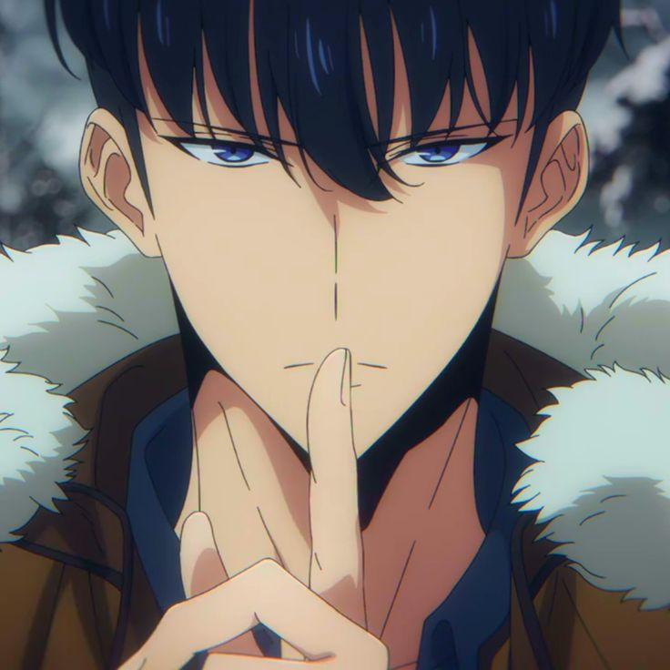

About Sun Jin Woo
Sun Jin Woo starts his journey as a low-level hunter but through mysterious events, he gains the ability to level up in a world where hunters fight monsters. His incredible journey from being the weakest to the most powerful hunter is the core of the *Solo Leveling* series.